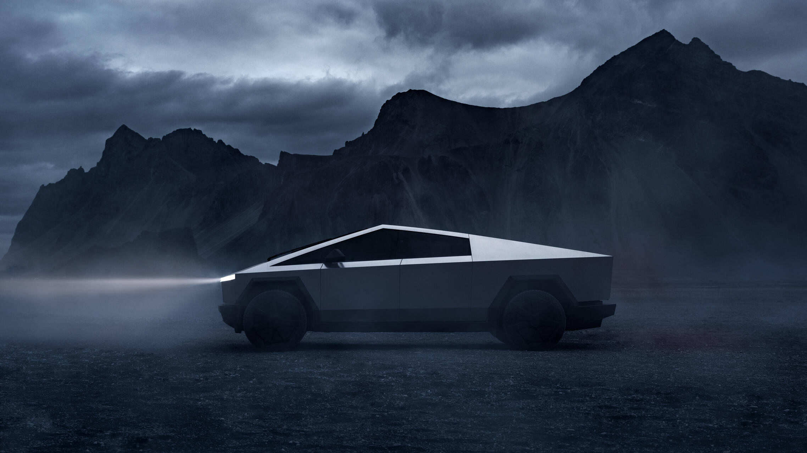
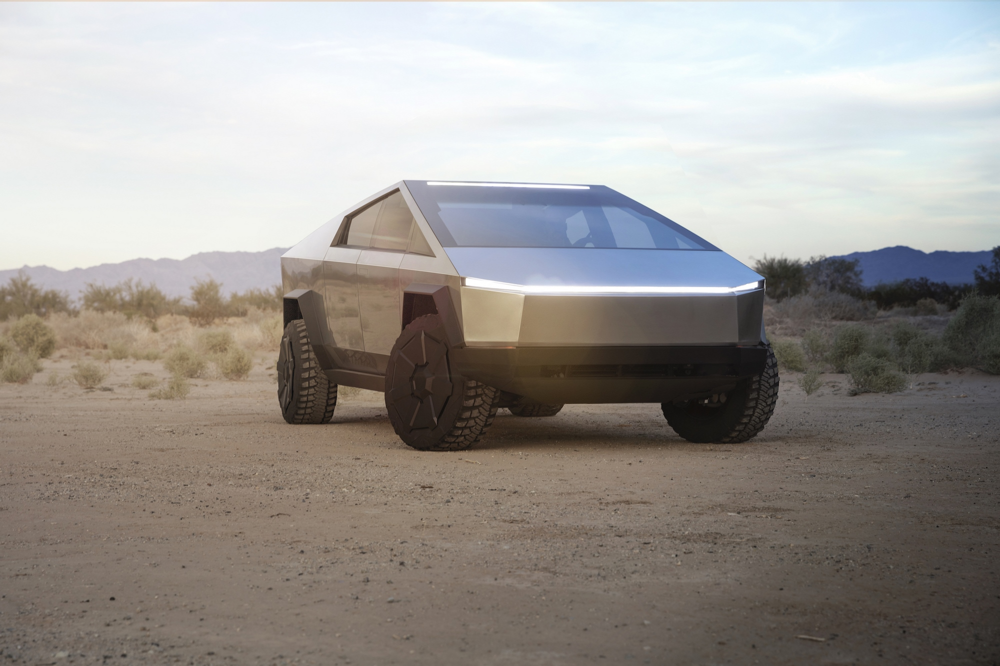

bonjour
jarditou
Cybertruck est un véhicule utilitaire tout terrain
à benne ouverte (pick-up) et 100 % électrique, dont la production par
le constructeur automobile américain Tesla a débuté le 15 juillet 2023.
La date de sortie officielle est annoncée par
Elon Musk en octobre 2023 pour le 30 novembre.


Motorisations
Le Cybertruck peut être équipé d'un moteur électrique placé sur
l'essieu arrière (propulsion) et bénéficie d'une autonomie
d'environ 400 km.
En milieu de gamme, le pick-up est entraîné
par deux moteurs électriques (Dual Motor) placés sur chaque essieu
le dotant de quatre roues motrices et d'une autonomie de 480 km.
Le haut de gamme, à trois moteurs (Tri Motor),
promet 800 km d'autonomie